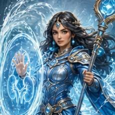

Filtra
Responda com intenção
Entre por tema ou deixe o motor ajustar a dificuldade com base no seu desempenho.
Estudantes de medicina • Residentes • Nefrologistas
Da graduação à atualização na especialidade: questões comentadas, revisão adaptativa, evidências organizadas e IA para entender cada erro — em uma jornada para aprender e se manter atualizado.
I Anatomia da evolução
Você não precisa de mais uma lista infinita de questões. Precisa de um ciclo que transforme resposta em compreensão, compreensão em memória e memória em domínio.
Filtra
Entre por tema ou deixe o motor ajustar a dificuldade com base no seu desempenho.
Interpreta
Compare sua escolha com a explicação e use o Oráculo para explorar onde o raciocínio desviou.
Retém
O histórico alimenta revisões espaçadas para trazer de volta o que ainda merece atenção.
Conquista
XP, classes, equipamentos e domínio por tema transformam consistência em progresso visível.
II Oráculo dos Néfrons
Depois de responder, use o tutor educacional de IA para investigar a armadilha, organizar o raciocínio e consolidar o ponto que merece ser lembrado.
Sem abrir outra aba e sem perder o contexto da questão.
Paciente com hiponatremia hipovolêmica. Você respondeu: restrição hídrica.
Cuidado — aqui está a armadilha. Você tratou como se fosse SIADH, mas o paciente está hipovolêmico. O corpo dele retém sódio e água por depleção de volume.
Restringir água aqui piora a perfusão. A conduta é salina isotônica para corrigir o volume — e o sódio sobe junto. Regra de ouro: sempre avalie a volemia antes de escolher o tratamento da hiponatremia.
↳ Fundamentado em UpToDate & Diretriz SBN de distúrbios hidroeletrolíticosFerramenta educacional. Não substitui diretrizes, supervisão ou decisão clínica.
III Sob a aventura
O RPG cuida da motivação. Por baixo dele, mecanismos de adaptação, memória e referência organizam uma rotina de estudo mais consistente.
IRT leve
O desempenho por categoria ajuda a escolher a próxima questão e evita uma sequência sempre fácil ou sempre frustrante.
Revisão espaçada · FSRS
Seu histórico organiza revisões para reduzir repetição aleatória e dar mais espaço ao que ainda precisa ser consolidado.
Referências no fluxo
Explicações e referências acompanham as questões para aproximar o treino da linguagem de provas, diretrizes e estudos.
IV Desenvolva seu personagem
Escolha uma classe e acompanhe 10 estágios de evolução visual. Conforme seu domínio cresce, equipamentos, presença e poder tornam o progresso impossível de ignorar.

Via glomerular
Defenda a barreira. Domine a complexidade glomerular.
Glomerulonefrites, síndromes nefrótica e nefrítica, biópsia e imunossupressão.


Via metabólica
Leia o equilíbrio invisível. Transforme números em decisão clínica.
Distúrbios hidroeletrolíticos, ácido-base e metabolismo ósseo-mineral.

Via longitudinal
Faça da constância uma forma de proteção.
DRC, terapia renal substitutiva, diálise e transplante.
Sua classe dá identidade à jornada sem limitar o conteúdo: você continua explorando toda a nefrologia.
V O confronto final
Cada acerto aproxima você do confronto que prova sua maestria. XP, classes, equipamentos e ranking dão forma à consistência que faltava para estudar todos os dias.
Começar grátisVI Antes da missão
O NefroQuest é uma plataforma educacional. A fantasia mantém o ritmo; o objetivo é estudar nefrologia com mais clareza e consistência.
Para estudantes de medicina, residentes e médicos nefrologistas — tanto para formar o raciocínio clínico quanto para revisar conceitos, acompanhar evidências e se manter atualizado na especialidade.
Sim. O modo visitante permite experimentar 15 questões antes de você decidir criar uma conta para salvar seu progresso.
A conta gratuita inclui 50 questões, além dos recursos e limites exibidos dentro do aplicativo. Você pode começar sem cadastrar cartão.
Ele é um tutor educacional de IA para explorar explicações no contexto da questão. Não substitui diretrizes, supervisão profissional nem decisão clínica.
O uso de conta, analytics e serviços de IA segue a política da plataforma. Consulte a Política de Privacidade para ver os detalhes.
Portal do próximo acerto
Da primeira questão à atualização na especialidade, o próximo movimento é seu.
Abrir o NefroQuest Sem cartão para começar · Modo visitante disponível